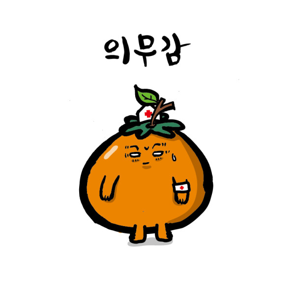

<!DOCTYPE html PUBLIC "-//W3C//DTD XHTML 1.0 Transitional//EN" "http://www.w3.org/TR/xhtml1-transitional.dtd">

<htm>
    <head>
        <title>웹 표준 관련 태그들 공부하기</title>
        <meta charset="utf-8">
        <style>
            p{ border:5px solid red;}
            p img{ border:5px solid blue;vertical-align: top;}
        </style>
    </head>
    <body>
        <!--
            문단내에 이미지 넣기 실슬(인라인 요소)
            1. img 사이에 엔터가 있을 경우 좌우 여백이 생긴다.
            2. 엔터 이후에 img와 p태그 사이에 여백이 생기는데 이때 vertical-align: top; 으로 없앴다.
        -->
        <p>
            
            
            
        </p>


    </body>

</htm>